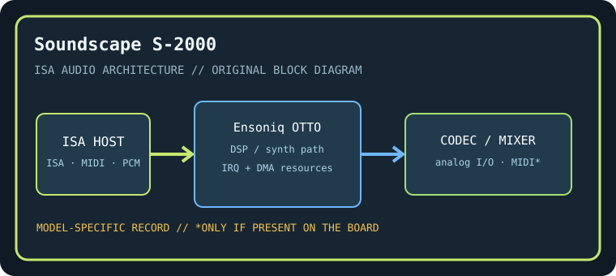

[ INDIVIDUAL COMPONENT // SOUND HARDWARE ]
Ensoniq Soundscape (S-2000)
This listing identifies the original Ensoniq Soundscape S-2000 ISA adapter and is separate from the Soundscape Elite already cataloged. Identify the PCB and audio-controller markings before applying setup instructions.

Model-specific specifications
| Catalog identity / chipset / DSP | Ensoniq Soundscape (S-2000). Ensoniq OTTO-family sound engine with onboard wavetable synthesis and model-specific controller logic; exact population/firmware must be read from the S-2000 card. |
|---|---|
| Audio codec / conversion | Onboard 16-bit audio codec/conversion path is revision-dependent; preserve the codec package marking and analog connector layout with the S-2000 record. |
| Bus / I/O / ports | 16-bit ISA. Soundscape setup utility assigns its ISA I/O range and MIDI/synth resources; conventional PC MIDI port 330h may be used by compatible configurations. Do not apply Sound Blaster 220h defaults without configuring emulation. |
| IRQ | Soundscape and optional Sound Blaster-compatibility modes have configuration-dependent IRQ use; record the Ensoniq utility’s selected IRQ and test conflicts. |
| DMA | PCM playback/capture DMA selection depends on enabled codec/emulation mode; verify the actual Soundscape configuration before allocating low/high DMA channels. |
| Driver / operating system | Ensoniq Soundscape DOS initialization and period Windows 3.x/95 drivers; Soundscape-native game support and Sound Blaster compatibility depend on firmware/software configuration. Modern driver support is not implied. |
| Motherboard compatibility | ISA PC-compatible motherboard with DMA/IRQ resources available; later ISA bridge chipsets may be timing-sensitive. Distinguish S-2000 from Elite/other Soundscape cards and retain matching setup disk. |
| Sound standards / interfaces | Ensoniq wavetable/MIDI sound, General MIDI-compatible playback with appropriate patches, and Sound Blaster compatibility only in documented emulation mode. |
| Connectors / power | ISA slot power; use only the analog, MIDI, CD-audio, and auxiliary connectors physically present on this exact board. Inspect the edge bracket, keyed headers, PCB revision, and manual before connecting. |
Compatibility & preservation notes
This listing identifies the original Ensoniq Soundscape S-2000 ISA adapter and is separate from the Soundscape Elite already cataloged. Identify the PCB and audio-controller markings before applying setup instructions. The precise DSP/codec package, firmware, resource assignment, and OS driver release must be matched to the physical SKU. Record the actual base port, IRQ, DMA channels, driver version, motherboard chipset, and BIOS configuration used in a working test rather than copying family defaults.
- Photograph the complete model number, PCB revision, major IC markings, jumpers, connectors, and any daughterboard before service.
- Check DMA and IRQ reservations against storage, serial/parallel, and other ISA devices; test PCM, synthesis, and MIDI functions independently.
- Power down and unplug the host before fitting/removing ISA hardware. Keep the exact manual and original setup/driver media with the specimen.
Manufacturer manuals & archival sources
- Internet Archive — Ensoniq Soundscape S-2000 manualArchive catalog search for original manufacturer-authored manual/setup documentation for this model; confirm the full SKU and revision in any scan.
- Internet Archive — Ensoniq Soundscape S-2000 DOS and Windows driver disksArchive catalog search for preserved manufacturer driver, utility, or bundled software media for this specific board.
- Internet Archive — Ensoniq Soundscape S-2000 ISA documentation archiveAdditional model-specific catalog records and manuals; use the physical board marking to exclude adjacent revisions and related products.
Archive search links are discovery records rather than claims that one particular scan is an original; verify provenance, revision and completeness before relying on a scanned setup guide.